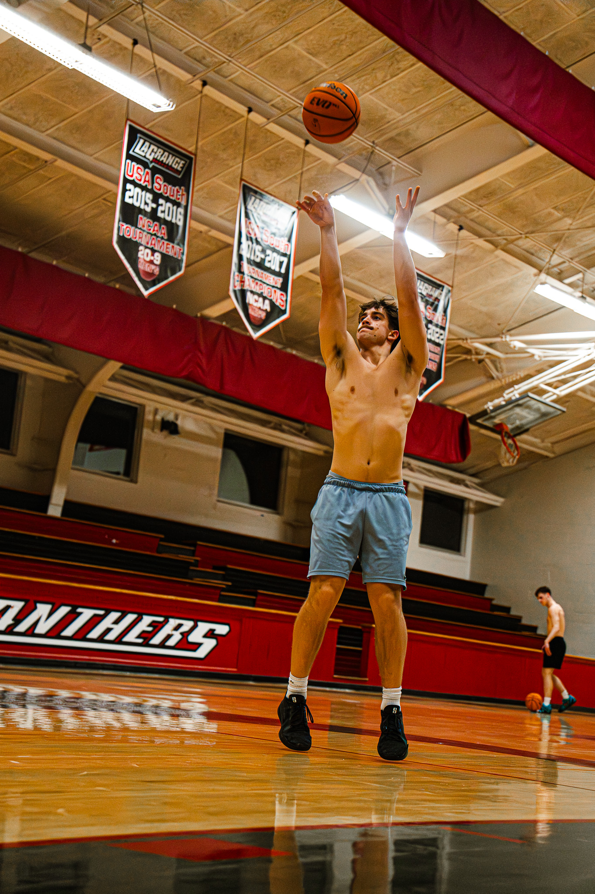

Important Skills for Sports Photography

Taking good sports photos requires practice and an understanding of your camera. A photographer has to react quickly because important moments can happen at any time.
Camera settings are also important because athletes are constantly moving. Using the right settings can help keep the subject sharp and make the image look more professional.
Skills to Practice
- Following fast-moving athletes
- Using a fast shutter speed
- Choosing the right camera angle
- Capturing emotion and celebration